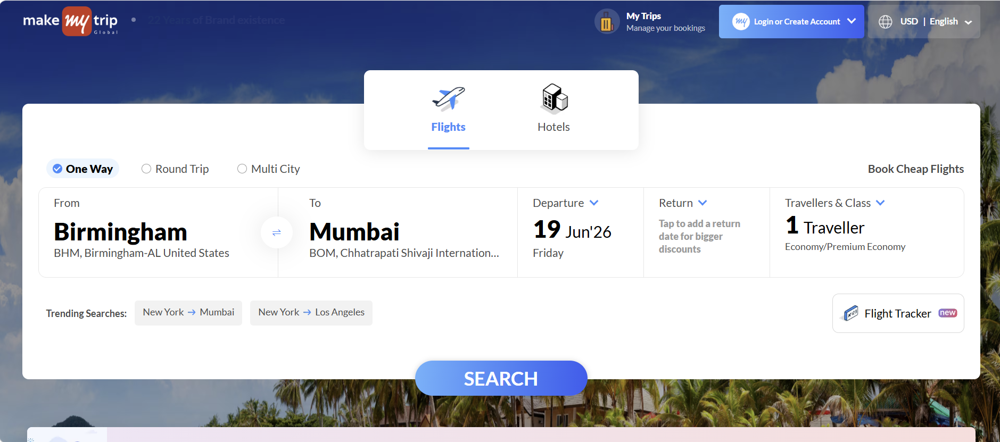
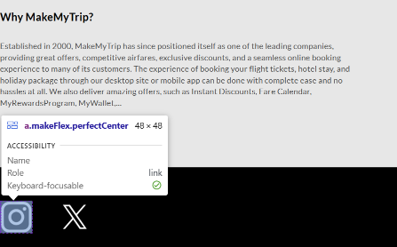
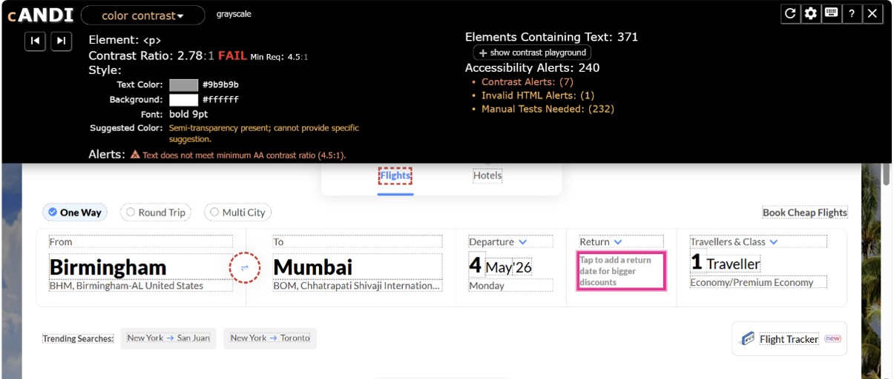
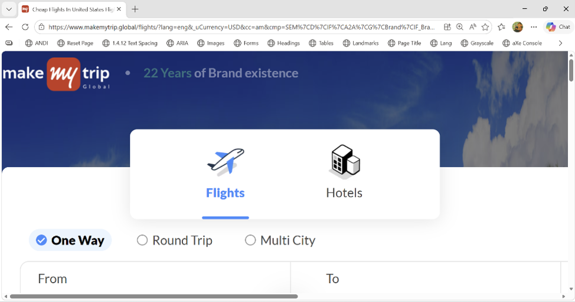
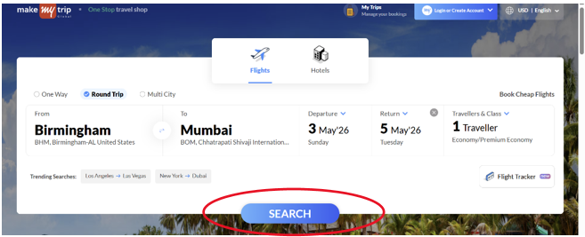
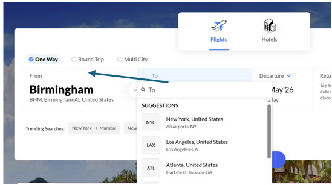
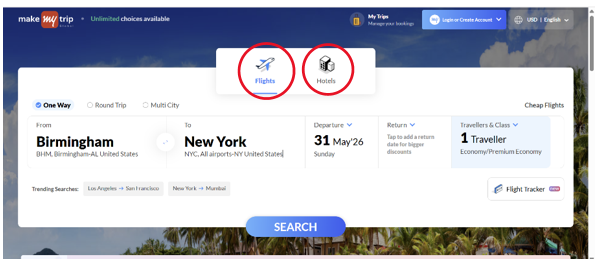
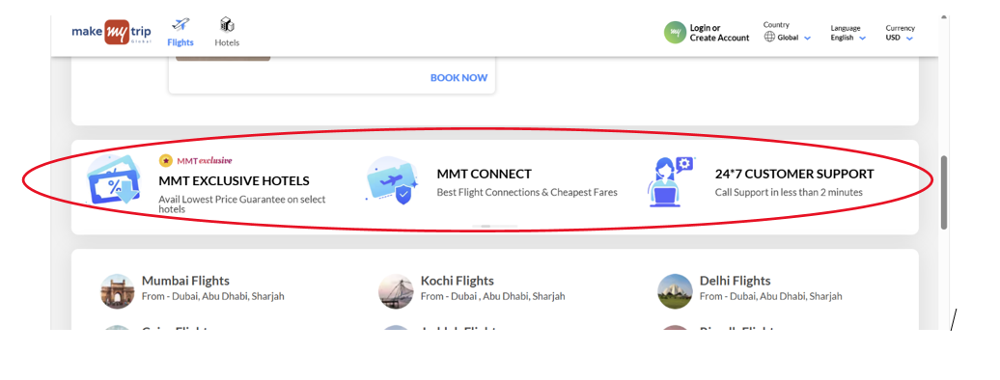
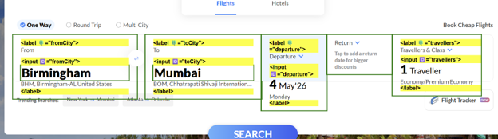

UX ACCESSIBILITY AUDIT • WCAG 2.2 • INCLUSIVE DESIGN
A UX accessibility audit of the MakeMyTrip flight booking experience focused on screen reader support, keyboard navigation, visual readability, responsive behavior, and inclusive design improvements.
View Findings
The goal of this audit was to evaluate accessibility barriers in the MakeMyTrip flight booking flow and identify design opportunities that improve usability for users with visual, motor, cognitive, and assistive technology needs.

Social media icons rely only on visual recognition and do not provide meaningful accessible names.
User Impact: Screen reader users may hear only “link” without knowing the destination.
Recommendation: Add descriptive labels such as “Follow us on Facebook.”

The helper text uses light gray on a white background with a contrast ratio of 2.78:1.
User Impact: Low-vision users may struggle to read important booking guidance.
Recommendation: Increase contrast to at least 4.5:1.

At higher zoom levels, the booking form requires horizontal scrolling.
User Impact: Zoom users must scroll sideways to access form fields.
Recommendation: Stack form fields vertically on smaller screens.

Some booking controls require improved keyboard interaction support.
User Impact: Keyboard-only users may struggle to complete search actions.
Recommendation: Support Tab, Enter, Space, and Arrow key interactions.

The page does not provide a mechanism to bypass repeated navigation.
User Impact: Keyboard users must tab through repeated header content.
Recommendation: Add a visible-on-focus “Skip to main content” link.

Interactive elements do not consistently show strong visible focus indicators.
User Impact: Keyboard users may lose track of their position.
Recommendation: Use a consistent high-contrast focus ring.

Promotional carousel content rotates without pause or stop controls.
User Impact: Users may lose information before finishing reading.
Recommendation: Add pause, stop, previous, and next controls.

Form labels need clear visual and programmatic relationships with inputs.
User Impact: Assistive technology users may not understand each field.
Recommendation: Associate every input with a visible label.
This audit showed how accessibility improvements directly improve usability for all users. Improving keyboard navigation, screen reader support, visual readability, responsive layouts, and form clarity can make the booking experience more inclusive and easier to use.
← Back to Portfolio